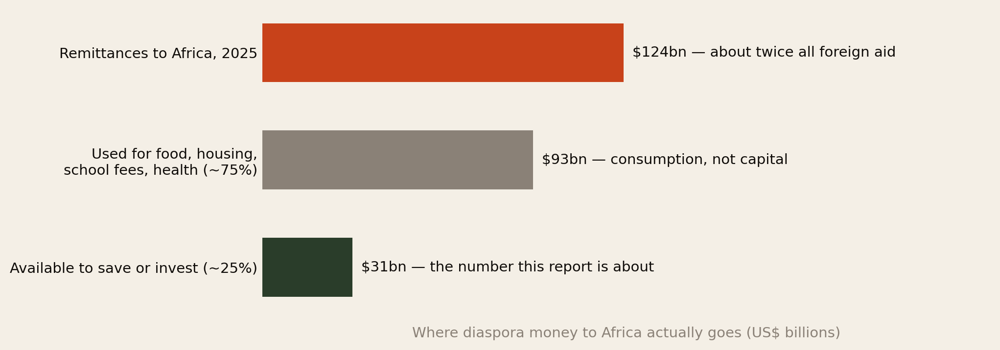
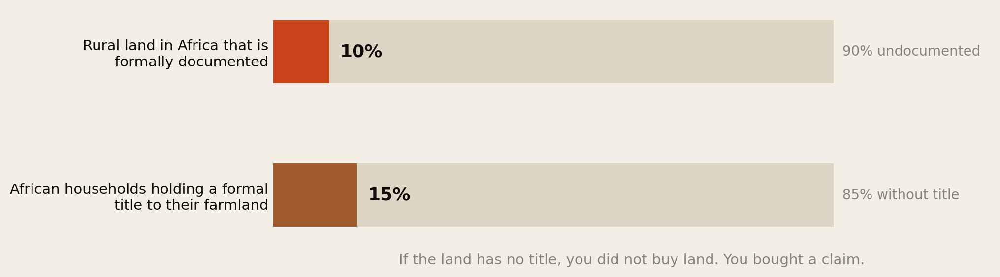
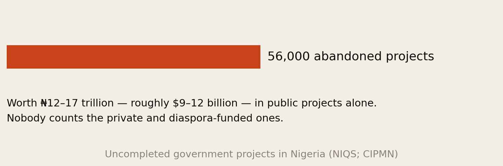
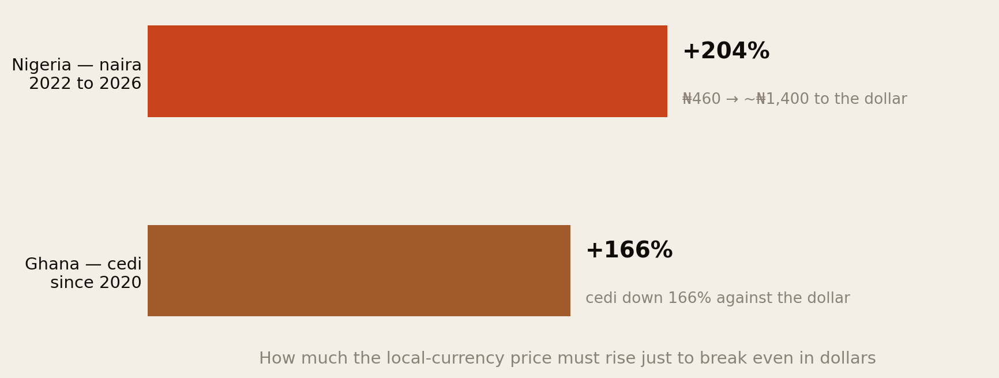
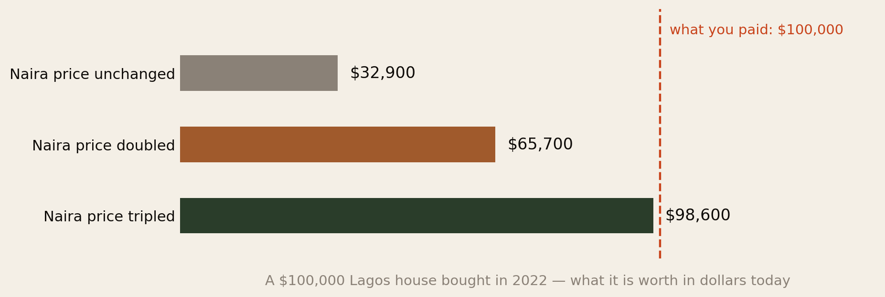
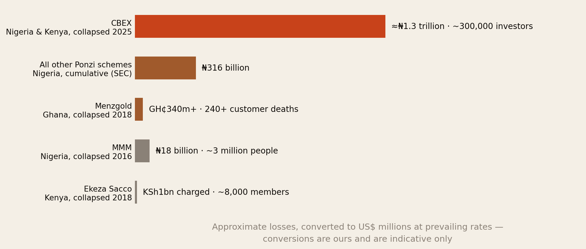
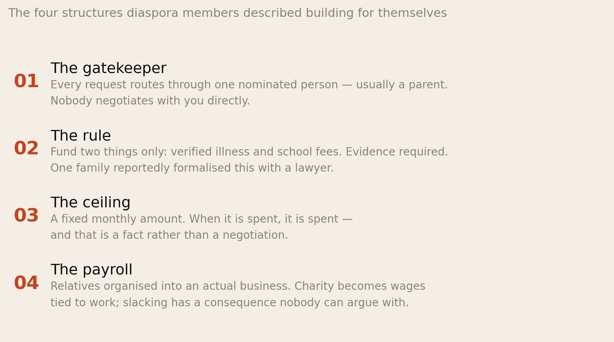
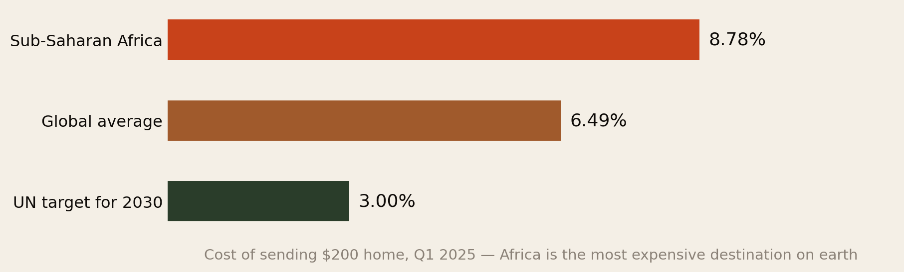
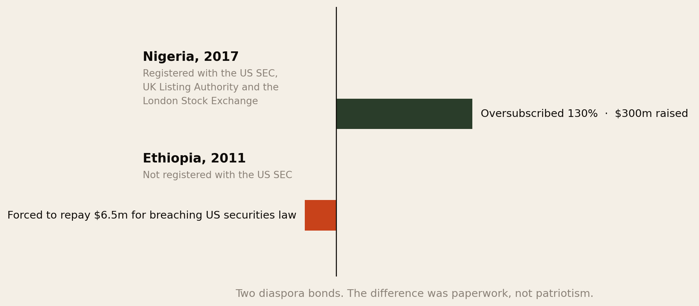

You Sent the Money. Did You Buy Anything?
Africans abroad send home $124 billion a year — about twice what the continent receives in foreign aid. Roughly a quarter of it is meant to build something. This is an account of the six ways that money stops being an asset somewhere between the transfer and the title, and what the evidence says actually prevents it.
Section 01The Short Version
Almost everyone in this network knows someone it happened to. The land that turned out to belong to someone else. The house that reached lintel level in 2019 and is still at lintel level. The scheme that paid out beautifully for eight months. The plot bought for a brother-in-law to supervise, never seen since.
These are not bad luck and they are not, mostly, bad judgement. They are six specific, documented mechanisms, and each one has a countermeasure.
- The money is enormous. Remittances to Africa reached about $124 billion in 2025 — roughly twice all official development aid. About 75% goes to consumption: food, rent, school fees, medical bills. That leaves roughly $31 billion a year that is genuinely available to invest.
- Failure one — the land has no paperwork. Only about 10% of rural land in Africa is formally documented, and roughly 15% of households hold a formal title. If there is no title, you did not buy land. You bought a claim, and claims can be sold twice.
- Failure two — the build stops. Nigeria alone carries over 56,000 abandoned public projects worth ₦12–17 trillion. Nobody counts the private, diaspora-funded ones, but the mechanism is identical: cost escalation, no supervision, no milestone contract.
- Failure three — the currency eats it. This is the one almost nobody prices. The naira went from about ₦460 to the dollar to about ₦1,400. A Lagos house bought for $100,000 in 2022 is worth $32,900 today if its naira price never moved. Its naira price has to triple just to get you back to even.
- Failure four — the return was never real. Nigeria’s SEC puts cumulative Ponzi losses at ₦316 billion before counting CBEX, which took an estimated ₦1.3 trillion from around 300,000 people in 2025. Ghana’s Menzgold took GH¢340m+; over 240 customers have since died, some by suicide.
- Failure five — nobody was actually watching. Family supervision is unpaid, unqualified and unaccountable, and it is the default arrangement for most diaspora building. That is a structural problem, not a character one.
- Failure six — the transfer itself. Sending $200 to sub-Saharan Africa cost 8.78% in early 2025 against a global average of 6.49% and a UN target of 3%. Africa is the most expensive place on earth to send money.
- And the thing that demonstrably works is boring. Nigeria’s 2017 diaspora bond was oversubscribed by 130%. Ethiopia’s 2011 bond was forced to repay $6.5m for breaching US securities law. The difference was registration and disclosure — paperwork, not patriotism.
The pattern across all six is the same: diaspora money is highly trusting and very poorly documented. Almost every safeguard in this report is a way of converting trust into paper.
Section 02What Is Actually at Stake

Start with the scale, because it explains why this matters beyond any individual family. $124 billion flowed into Africa in remittances in 2025 — about twice the level of overseas development assistance. Nigeria alone takes over $20 billion a year, more than its foreign direct investment inflows.
But most of that is not investment. Around 75% goes to immediate support — food, housing, education, health. That is not a failure; it is the point of it. What is left is roughly $31 billion a year genuinely available for saving or capital formation.
Thirty-one billion dollars a year is not pocket money. It is larger than the annual GDP of most African countries. The question of how much of it survives contact with the ground is therefore not a private matter about your uncle’s plot. It is one of the larger capital-allocation questions on the continent, and it is almost entirely unmeasured.
That absence of measurement is itself the first finding. Nobody publishes a diaspora investment failure rate. There is no registry of abandoned diaspora builds, no audit of what happened to the money. Everything in this report is assembled from adjacent evidence — land registration statistics, public project abandonment, regulator prosecutions, currency data. Treat the mechanisms as well documented and the aggregate loss as unknown.
Section 03Failure One: The Title That Isn’t

Only about 10% of rural land in Africa is formally documented. Roughly 15% of households hold a formal title to the farmland they occupy. Only about 4% of countries have documented the land in their own capital cities.
This single fact generates most of the land horror stories in the diaspora. Where there is no register, the thing that proves ownership is a chain of local knowledge — who the family is, who farmed it, who the chief recognised. That chain works reasonably well for people who are physically present and catastrophically badly for people who are not.
The specific ways it goes wrong are well documented by prosecutors:
- The same plot sold to several buyers. Nothing prevents it if there is no central register to check against. In 2025 Nigeria’s EFCC charged an Abuja developer and his spouse over land fraud involving forged documents and sales worth hundreds of millions of naira.
- Forged or defective documents. A receipt, a survey plan and a photograph of a signpost are not title. Many diaspora buyers have never seen the actual instrument.
- Land that is subject to government acquisition, under an existing right of occupancy, or in an area with a pending compulsory purchase — all discoverable by a search, none visible from a photograph.
- Family land sold by one member without the consent of the others, which is a live dispute waiting for you rather than a purchase.
If your evidence of ownership is a receipt and a relationship, you have not bought land. You have bought a position in a future argument.
The countermeasure is unglamorous and cheap relative to the sums involved: an independent title search at the relevant state or national land registry, commissioned by a lawyer you retained, before any money moves. Not the seller’s lawyer. Not the agent’s. Not a family friend who knows someone at the registry.
Section 04Failure Two: The Build That Stops

Nigeria carries more than 56,000 abandoned government projects, valued at somewhere between ₦12 and ₦17 trillion. Warehouses, half-built roads, dilapidated bridges, deserted housing estates, non-functional airports.
That is the public sector, with budgets, procurement rules, quantity surveyors and parliamentary oversight. If projects fail at that scale with institutional supervision, the base rate for an unsupervised private build funded in instalments from four thousand miles away is not going to be better.
The documented causes of construction abandonment are consistent, and none of them are exotic:
- Cost escalation. A build quoted in 2022 naira and funded through 2026 has been hit by both inflation and devaluation. The quote was never a price; it was an opening position.
- Funding in instalments with no schedule. Money arrives when the sender has it rather than when the stage requires it, so work stops and restarts, and each restart costs money.
- No written contract, or one that does not tie payment to completed stages.
- No independent supervision. Nobody with professional liability ever inspects the work.
- Diversion. Material money spent on something else, with the build used as the explanation for the next request.
The countermeasure here is the single highest-value thing in this report and it is standard practice everywhere else in the world: stage payments against verified completion. Money is released when the foundation is signed off, then when the walls are up, then at roofing — each stage certified by an independent professional you are paying, who carries a licence they could lose.
Escrow arrangements that hold funds until milestones are met are now offered by a number of platforms and banks, precisely because the demand for them is so obvious. In 2026 UBA launched a diaspora-focused investment platform aimed at exactly this problem, and the Federal Mortgage Bank of Nigeria has introduced diaspora financing products. Whether any given one is good is a separate question; the structure is the right structure.
Section 05Failure Three: The Currency Tax
This is the failure almost nobody prices, and on the numbers it is larger than fraud.

The naira lost 51.5% of its value in 2023 and a further 40.9% in 2024, moving from around ₦460 to the dollar to about ₦1,400–1,500. Ghana’s cedi has depreciated about 166% since 2020.
Here is what that means for an asset. If you hold something whose value is denominated in naira, and the naira has fallen by two-thirds against the dollar, then the naira price of your asset must roughly triple just to leave you where you started in the currency you actually earn and spend.

A $100,000 house bought in Lagos in 2022, whose naira price has not moved, is worth about $32,900 today. If its naira price doubled — which most people would describe as a very good investment — it is worth $65,700. You would need the naira price to triple to approximately break even.
Nobody in the diaspora tells this story, because in naira the house went up. In the currency your mortgage, your pension and your children’s school fees are denominated in, it went down by two-thirds.
Three honest qualifications, because this argument can be pushed too far.
- Prime urban property in Lagos, Accra and Nairobi has in many cases risen faster than the currency fell, particularly where it is priced in dollars to begin with. Some diaspora property has done well in dollar terms. The point is not that it always loses — it is that the currency move is the dominant term in the equation and is almost never in the spreadsheet.
- If you intend to retire there, dollars are the wrong measure. An asset that houses you in Enugu should be valued in what it costs to live in Enugu. Currency risk only bites if you need to convert back.
- Rental income is hit twice — the rent is in local currency and it usually lags inflation, so real yields compress exactly when the currency is falling fastest.
Section 06Failure Four: The Return That Was Never Real

Nigeria’s Securities and Exchange Commission estimates that Nigerians have lost about ₦316 billion to Ponzi schemes and illegal fund managers over the years — a figure that excludes CBEX. CBEX, which promised up to 100% in 30 days and claimed to trade using AI, collapsed in April 2025 having taken an estimated ₦1.3 trillion from around 300,000 investors across Nigeria and Kenya. Nigeria’s EFCC separately warned the public about 58 illegal schemes operating in 2025 alone.
Ghana’s Menzgold promised 7–10% monthly and defrauded customers of more than GH¢340 million when it collapsed in 2018. Reporting indicates more than 240 customers have died in the years since, some by suicide. Kenya’s Ekeza Sacco, tied to a well-known televangelist and promising affordable housing, collapsed with around 8,000 members affected; its founder was charged over roughly KSh1 billion.
Diaspora investors are structurally attractive targets for these schemes, and it is worth being clear about why:
- You have hard currency and the returns are quoted in a currency that is depreciating, which makes the promised numbers look plausible against local inflation.
- You cannot visit the office, so the ordinary physical checks are unavailable.
- Recruitment runs through community and church networks, where the introduction comes from someone you trust rather than someone selling.
- The real alternative looks bad. When your savings account pays 1% and the naira falls 40%, a scheme offering 10% a month is answering a genuine problem — badly.
The rule that would have prevented every case above is a single question: is this entity licensed by the securities regulator of the country it operates in, and can you find it on the regulator’s own register? Not its website. The regulator’s register. Nigeria’s SEC, Ghana’s SEC, Kenya’s CMA and the equivalent bodies all publish lists, and all of them publish warnings about unlicensed operators.
The second rule: a return that is high, fixed, and guaranteed is a contradiction in terms. Real returns vary. Anything paying a fixed 10% monthly is paying you with the next person’s deposit.
Section 07Failure Five: The Agent Problem
Every failure above is made worse by the same structural arrangement: the person supervising your money on the ground is a relative, is unpaid, is not a professional, and cannot be fired.
We want to be careful here, because there is no data on this and it would be easy to slide into a slander on African families. Most people supervising a sibling’s build are doing their honest best, for free, at real personal cost, and are frequently the reason anything got built at all.
But the arrangement itself is badly designed, and it would be badly designed anywhere:
- No expertise. Your cousin cannot tell whether the concrete mix is right or the block-work is plumb, and neither can you over WhatsApp.
- No liability. A licensed surveyor or architect who signs off bad work can be sued or struck off. A relative faces no consequence but a family argument.
- No exit. If the arrangement is failing, the cost of ending it is a permanent rupture with your family. So people continue funding projects they have privately stopped believing in.
- Unpaid work invites informal compensation. If someone spends two years of Saturdays managing your site for nothing, the temptation to take a margin on materials is a predictable feature of the design, not a moral failing unique to anyone.
Pay a professional. It is cheaper than what unpaid supervision actually costs, and it converts a family relationship into a contract that can be enforced without ending the relationship.
Concretely: engage a licensed quantity surveyor or project manager on a fee, have them certify each stage, and let your relative be your relative rather than your unpaid clerk of works. Budget 3–6% of build cost for supervision. Against a 56,000-project abandonment base rate, that is the cheapest insurance available.
Section 08What the Diaspora Says Happens
A note on what this section is. Everything above rests on published statistics. This section does not. It is drawn from what Africans abroad say publicly, at length and in large numbers, on open discussion forums — Nigerians, Ghanaians, Zimbabweans, Cameroonians and Kenyans, comparing notes about money sent home. These accounts are self-reported, self-selected and unverifiable. People who have been burned post more than people who have not. Nothing here should be read as a measured rate of anything.
We include it anyway, for three reasons. It is the only description we have of the mechanism the statistics leave blank — particularly Section 07, where we said plainly that the agent problem had no supporting evidence. The accounts are strikingly consistent across countries that have no contact with each other. And one of the theories that emerges from them turns out to be confirmed by peer-reviewed research, which we set out below.
It is not a request, it is a subscription
The single most repeated pattern is escalation. A relative asks for a specific thing — a washing machine, a phone, school fees. The money is sent, often with something extra added out of affection. The specific need is then immediately replaced by a new one: no money for food, then a generator to run the washing machine.
The structural point is that the transfer does not close the request; it opens an account. The same dynamic is described in nearly identical terms by people who have never met, in five different countries. And it propagates: send to one person and the number circulates. One account describes over 300 messages from a single contact after one shared meal.
This matters for the rest of this report because it is the same failure mode as an unstaged construction payment. Money released against a relationship rather than against a defined, completed deliverable does not terminate the obligation. It establishes a rate.
The information asymmetry runs both ways
The accounts are more honest than the stereotype in both directions.
- People at home frequently cannot see the cost of living abroad. $100 converted mentally into local currency reads as a month of living, so a refusal reads as hoarding. Several posters from the continent made this point themselves, and framed it as inexperience rather than malice. Understanding why the arithmetic is wrong does not make it right, but it does change what you are dealing with.
- People abroad frequently cannot see the need at home either. The most useful single account in the whole body of material describes a man who argued with his mother for years about her requests, then visited, saw how she was actually living — and voluntarily increased what he sent. Some need is performance and some is severe, and from four thousand miles away the two are indistinguishable. That is the real problem: not the asking, but the impossibility of verification.
- The senders are often not wealthy. Recurring accounts describe people funding relatives while living on savings, borrowing from their own children to cover rent, or reaching sixty in an expensive country with no retirement provision because home always came first. Marriages are described as ending over it.
The whole system runs on an unverifiable claim made to someone who cannot check it and cannot say no. That is not a family problem. It is a design problem, and it is the same one that loses people their building money.
The loyalty tax
One contributor, writing about Cameroon, gave the mechanism a name that we think is the sharpest framing in the entire body of material: the loyalty tax.
The argument runs like this. Where contracts are weakly enforced and the future is uncertain, extracting value from you today is the rational strategy, because the long game does not reliably pay. The contractor who overbills is not stupid; he has correctly read his own environment. And the diaspora member is the ideal counterparty, because they cannot credibly walk away. Walking away means abandoning a cousin, a village, an obligation incurred on departure. Everyone involved understands that guilt is the enforcement mechanism, and that it points in only one direction.
This is a better explanation of the pattern than dishonesty is. It also predicts the countermeasure correctly: what protects you is not finding more trustworthy people, but arrangements in which walking away is possible — a defined ceiling, a defined rule, a third party holding the funds. Every safeguard in Section 09 is, in this light, a way of restoring the ability to say no.
The claim we could check — and it holds
One assertion in this material is strong enough that it should not be repeated without verification: that the more diaspora money privately funds schools and clinics, the less the state bothers to.
It is supported by peer-reviewed research. A study of 86 developing countries over 1996–2007, published in the Journal of Development Studies, found that remittance inflows reduce public spending on education and health where governance is weak — the “public moral hazard” effect. Later work in Health Policy and Planning examines the same effect on public health expenditure in Africa specifically. Related findings associate higher remittance receipts with weaker control of corruption and rule of law.
Two cautions. This is a macroeconomic finding about national aggregates and weak-governance settings, not a verdict on any individual family — nobody’s school fees caused a ministry to cut its budget. And the direction of causation in this literature is genuinely contested. But the mechanism the poster described is real and it is measured: private diaspora provision can reduce the political cost of public non-provision. The money that fixes the immediate problem can help sustain the conditions that produced it.
Why the businesses die
On diaspora-founded businesses, the accounts converge on a specific and unflattering diagnosis, and it is consistent with the trust-deficit findings in Section 04:
- Pricing in dollars for customers earning cedis or naira. The resulting market is other diaspora members, who buy once out of solidarity and then return to the cheaper local option.
- Two weeks at Christmas is not market research. Neither is a childhood memory. The strong recommendation from people who survived is to live there for a full year first — through every season, every festival and every fuel shortage — ideally while employed by someone else.
- Distribution decides everything, and the diaspora consistently underestimates it. Multiple accounts describe informal retail networks — market traders and street hawkers — as the actual gatekeepers of what sells, responsive to margin rather than branding.
- The costs no spreadsheet included: power and water interruptions, foreigner pricing, informal payments stacked on official fees, and employee theft. The observation that established immigrant business communities import their own managers is offered as evidence of how hard the staffing problem is.
- “Invest in the motherland” events are described as a business in themselves — paid rooms full of diaspora members with no local operating experience, advising one another.
What the people with peace actually did

The consistency here is the most useful thing in the section. Almost nobody who described reaching a stable position did it by giving less to the same people in the same way. They did it by changing the structure of the transaction, and they arrived at four arrangements independently.
Note what all four have in common with the rest of this report: they replace a relationship with a rule. A gatekeeper is an escrow agent. An evidence requirement is a milestone certificate. A ceiling is a fixed-price contract. Turning relatives into employees is the same move as hiring a licensed supervisor instead of asking a cousin — it converts an unenforceable bond into an enforceable one, and, on these accounts, it tends to preserve the relationship rather than destroy it.
Two honest closing notes. Several accounts describe cutting family off entirely and then hearing nothing for years — which they read as proof the relationship was only ever the transfer. That reading may be right; it may also be what estrangement looks like from one side. We do not know. And the most quietly devastating theme across all of it is not fraud or entitlement at all: it is people who left in order to help, and who wanted the relationships far more than they minded the money, discovering that affection began arriving with an invoice attached and neither side could remember who sent the first one.
Section 09Failure Six: The Cost of Getting It There

Before a single naira reaches a plot, the transfer takes its cut. Sending $200 to sub-Saharan Africa cost an average of 8.78% in the first quarter of 2025 — up from 7.7% a year earlier, against a global average of 6.49% and a UN Sustainable Development Goal target of 3%.
Africa is the most expensive destination on earth to send money to. On a $50,000 build funded in twenty transfers, the difference between 8.78% and 3% is roughly $2,900 — which is a supervising surveyor for the whole project, paid for out of nothing but choosing a better rail.
Two practical notes. Costs vary enormously within the average — digital-first providers and mobile-money corridors are often well below it while cash-to-cash agents are well above. And for large capital transfers the percentage headline matters less than the exchange rate spread, which is where most of the real cost sits and which is rarely quoted as a fee at all. Compare the total amount that lands, not the advertised fee.
Section 10What the Evidence Says Works
There is one natural experiment in the record that isolates what actually protects diaspora money, and it is worth studying closely.

Nigeria, 2017. A $300 million diaspora bond at 5.625%, registered with the US Securities and Exchange Commission, the UK Listing Authority and the London Stock Exchange. It was oversubscribed by 130%.
Ethiopia, 2011. A diaspora bond sold to Ethiopians in the United States without registering with the SEC. Ethiopia was ultimately forced to repay $6.5 million for violating US securities law, and the programme is generally judged a failure.
Same continent, same instrument, same emotional pitch to the same kind of buyer. The difference was that one submitted to a disclosure regime with teeth and the other did not. Diaspora investors are not irrationally distrustful — they respond, and in size, to enforceable protection.
Generalising from that and from the safeguards now standard in well-run diaspora property transactions, the measures with an actual track record are:
- Regulated instruments over informal ones. If a product is registered with a securities regulator, there is a disclosure document, an auditor and a body you can complain to. If it is not, your only remedy is a lawsuit in a jurisdiction you do not live in.
- Independent title search before payment, at the registry, by your own lawyer.
- Escrow with milestone release. Funds held by a third party and released against certified completion.
- Independent professional supervision, paid, licensed, and reporting to you.
- Verify the counterparty exists as a company. In Nigeria that means a CAC registration check; equivalent registries exist in every market. It takes minutes.
- A written contract reviewed by counsel you retained — not the developer’s standard form, reviewed by the developer’s lawyer.
- Physical inspection by an independent third party before purchase. Not a photograph. Not a video call conducted by the seller.
- Digitised registries where they exist. Blockchain-based and digital land-title pilots are running in Lagos and Oyo among others. These are early and should not be trusted blindly, but where a state registry is searchable online, search it.
Section 11The Checklist
If you take one thing from this report, take this. Nothing here is expensive relative to the sums at risk, and the whole list can be done from abroad.
| Before you send anything | Why | Rough cost |
|---|---|---|
| Retain your own lawyer in the country — not the seller’s, not a relative’s friend | Every other step depends on having someone whose duty is to you | Modest fixed fee |
| Independent title search at the land registry | Catches double sales, forged documents, government acquisition, existing encumbrances | Small, often under $200 |
| Company registration check on the developer or agent | Confirms the counterparty legally exists and who controls it | Near zero, minutes online |
| Regulator register check for any investment product | The single test that would have caught CBEX, Menzgold, MMM and Ekeza | Free |
| Independent physical inspection by someone you pay | Confirms the land exists, is where they said, and is not occupied | Small |
| Written contract reviewed by your counsel | Turns promises into obligations that survive a fallout | Modest |
| Escrow or staged payment against certified milestones | The single most effective control against abandonment and diversion | Small % of transaction |
| Licensed supervisor on a fee for anything being built | Creates expertise, liability and an exit that does not end a family | 3–6% of build cost |
| Compare what lands, not the advertised fee, on every transfer | The exchange-rate spread usually costs more than the stated fee | Free; saves ~6% |
Total cost of the whole list on a $50,000 project: comfortably under $3,000, much of it one-off. Set that against a base rate of abandonment that runs into tens of thousands of projects in one country alone.
Section 12How to Think About Currency
Because Section 05 is the part people argue with, here is the practical version.
- Ask what currency you will need the money in. If you will spend it where you live now, you are a dollar, euro or pound investor and local-currency assets carry a large hidden risk. If you will retire there, you are a local-currency investor and the risk mostly disappears.
- Price the hurdle explicitly. Before buying, write down what the local-currency price has to do over your holding period just to break even in your home currency. If that number is 200%, say so out loud.
- Prefer assets that earn hard currency where you can find them — export businesses, dollar-denominated commercial leases, tourism.
- Do not treat local-currency cash as savings. Money sitting in a naira or cedi account waiting for the next construction stage is losing value the entire time. Send it when it is needed, not before.
- Beware of returns quoted in local currency. A 25% annual return in a currency falling 40% a year is a 15% loss wearing a good suit.
Section 13If You Are Building for the Diaspora
For members of this network building products, funds or developments aimed at Africans abroad, the evidence points at something specific: the market is not short of demand or of capital. It is short of enforceable structure.
- Register where your buyers live, not only where you operate. That is the entire lesson of Nigeria 2017 versus Ethiopia 2011. It is expensive and it is the product.
- Sell the escrow, not the yield. Every competitor is promising returns. Almost none are promising a structure in which failure is recoverable.
- Third-party verification beats your own transparency. Your video walkthrough is your video. An independent surveyor’s certificate is evidence.
- Assume your buyer has been burned, or knows someone who has. The trust deficit is earned, and it is documented: Nigerian real-estate professionals themselves name it as the single biggest deterrent to diaspora buyers.
- The unserved segment is small tickets with real protection. Structured products exist for the $500,000 buyer. The $15,000 buyer — which is most of the diaspora — gets an agent and a prayer.
Section 14The Uncomfortable Part
Three things worth saying plainly.
First, some of this is our own doing. Diaspora buyers routinely skip checks they would never skip at home. Nobody buys a house in Manchester or Maryland without a solicitor and a survey. The same person will wire $40,000 for land in a village on the strength of a phone call, because it is home and home does not feel like a transaction. That instinct is decent and it is exactly what the fraud is built to exploit.
Second, the emotional pressure is real and it should be named. Building at home is not only an investment; it is proof that the migration was worth something, and there is family expectation attached to it. That makes it very hard to stop funding a failing project, or to ask a relative for receipts. The checklist above is partly a way of moving those decisions out of the emotional register and into a document, before the pressure arrives.
Third, the structural fix is not the diaspora’s job. Ninety percent of African land being undocumented is a state failure, not a consumer one. So is a 56,000-project abandonment backlog, and so is a 8.78% remittance cost. Individuals can protect themselves with lawyers and escrow, and they should. But the reason this report exists at all is that the infrastructure a Danish or Canadian investor takes for granted — a searchable register, an enforced contract, a functioning regulator — is what is actually missing.
You cannot fix the land registry from Houston. You can refuse to buy anything that is not in it.
Section 15Method & Limits
This report assembles published figures as at 18 August 2026, read for what they say about why diaspora capital fails to become diaspora assets.
- There is no diaspora investment failure rate, and we have not invented one. No registry tracks diaspora-funded projects to completion. Every mechanism in this report is documented; the aggregate loss is genuinely unknown. Anyone quoting you a headline percentage for how many diaspora investments fail is estimating.
- Fig 3 is public projects, not diaspora ones. Nigeria’s 56,000 abandoned projects are government contracts. We use them as evidence that construction abandonment is systemic rather than as a measure of diaspora outcomes, and the two are not the same thing.
- Fig 4 and Fig 5 are our own arithmetic, at ₦460 and ₦1,400 to the dollar. They are illustrations of a mechanism, not valuations. Real Lagos property prices have in many cases risen substantially in naira, and dollar-priced prime property behaves differently again.
- Fig 6 mixes currencies, years and definitions. Bar lengths are our own dollar conversions at prevailing rates; the reported local-currency figures are shown beside each bar and should be treated as the primary numbers. The CBEX figure in particular is an early estimate from a 2025 collapse and may be revised substantially.
- The ₦12tn and ₦17tn abandonment valuations come from two different professional bodies and we have quoted the range rather than pick one.
- The 75/25 consumption-investment split is a survey-derived estimate from IFAD, applied continent-wide. Real splits vary enormously by country, corridor and household income.
- Section 07 has no quantitative support, and we have flagged it as structural reasoning rather than evidence. The mechanism is well understood in every other context where principals delegate to unmonitored agents; Section 08 gives it qualitative support, but nobody has measured it.
- Section 08 is not evidence of the same kind as the rest of this report, and is labelled as such where it appears. It draws on self-reported accounts posted publicly on open diaspora forums. That material is self-selected — people who lost money post more than people who did not — unverifiable, and impossible to weight. We use it to describe mechanisms and to record the arrangements people say worked, never to establish how often anything happens. Individual accounts referenced there are paraphrased rather than quoted, and we have not attempted to identify or contact anyone involved.
- The public moral hazard finding is contested. The Journal of Development Studies result holds for weak-governance settings across 86 countries; the direction of causation in this literature is genuinely debated, and it describes national aggregates, not households. We have stated it as a measured macroeconomic effect and nothing more.
- Nothing here is financial or legal advice. We are not licensed to give either. The checklist is a list of ordinary due-diligence steps, not a recommendation about any product, country or asset.
- Country coverage is uneven. Nigeria, Ghana and Kenya are heavily represented because they publish and prosecute; Francophone and Lusophone Africa are under-represented here for lack of comparable public data, not because the problems are absent.
Principal sources: World Bank on remittance volumes and remittance costs; African Development Bank and IFAD on the consumption-investment split; Atlantic Council and World Bank land research on documentation rates; the Nigerian Institute of Quantity Surveyors and Chartered Institute of Project Managers of Nigeria via Vanguard and TheCable on abandoned projects; Nairametrics on naira depreciation; Nigeria’s SEC via Technext and Pulse on Ponzi losses; reporting on Menzgold and Business Daily on Ekeza Sacco; ODI on diaspora bonds; The Guardian Nigeria on the trust deficit; Journal of Development Studies and Health Policy and Planning on the public moral hazard effect of remittances. Section 08 draws on publicly posted accounts across open diaspora discussion forums.
Companion reports: Africa Saves. It Just Doesn’t Compound. and How Long Until It Was Worth It?
The diaspora helps the diaspora.
Africa Global Forum is a peer network for Africans abroad — help each other, sit together, and bounce ideas. This research is part of an open library, free to read and share.